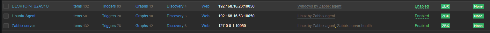

프로젝트 목록
GNS3
_ipaddr.PNG)
HIDS - OSSEC
Zabbix

pfsense Remote Access
Snort
Suricata
포트폴리오 페이지입니다.
다음 페이지로 이동 →안녕하세요, 저는 이혜원입니다. 이 페이지는 저의 포트폴리오로, 다양한 네트워크, 보안, 서버 구축 프로젝트를 확인하실 수 있습니다. 각 프로젝트 카드를 클릭하면 상세 내용과 이미지를 볼 수 있습니다.
GNS3
HIDS - OSSEC
Zabbix
pfsense Remote Access
Snort
Suricata
FireFox3 -> ASAv inside http 접속
FireFox3 -> ASAv inside telnet 접속
Webterm2 -> ASAv dmz telnet 접속

PC1 -> Webterm1 Ping 접속

Webterm1 -> R1 http 접속

Webterm1 -> R1 telnet 접속

Webterm2 -> PC1 Ping 가능

R3 - Standby, R4 - Active 로 구축

윈도우, Rocky Agent로 연결

윈도우 OSSEC 연결

Rocky 로 Zabbix Server 구축
윈도우, Rocky Agent로 연결
Pfsense로 오픈 VPN 구축
기본 Snort 구축한 우분투 rules
Snort Rule 1. Window -> OSSEC http, ping탐지


Snort Rule 2. Rocky -> Window ping 탐지
Snort Rule 3. Kali -> Window Rand Source Attack DDoS 탐지

Snort Rule 4. Kali -> Rocky SYN Flag Scanning 탐지
Snort Rule 5. Window -> Rocky Command URL 탐지
HIDS 에서 웹접속을 해보려 했는데 방법을 찾지 못했습니다..

기본 Suricata 구축한 Rocky Rules
Suricata Rules 1. Window -> OSSEC ubuntu http, ping 탐지


Suricata Rules 2. Kali -> Rocky SYN Flag Scanning 탐지
Suricata Rules 3. Window -> Rocky Command 탐지